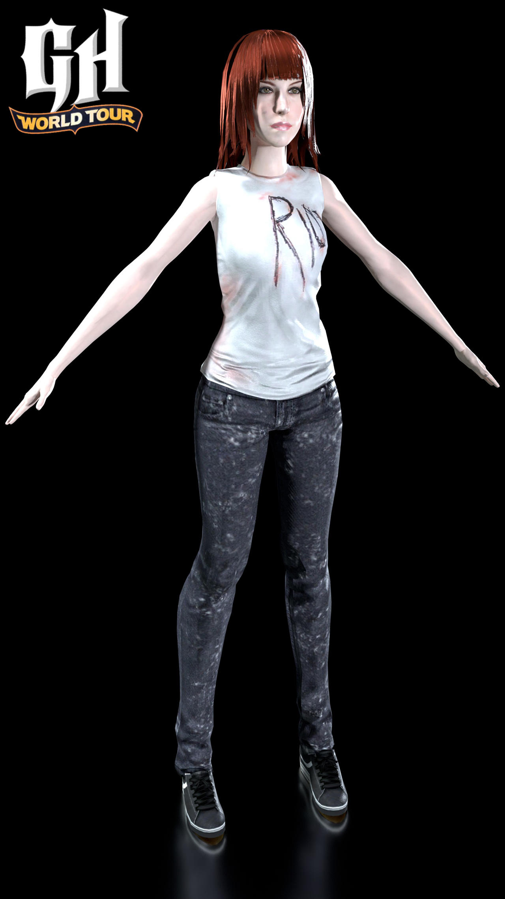
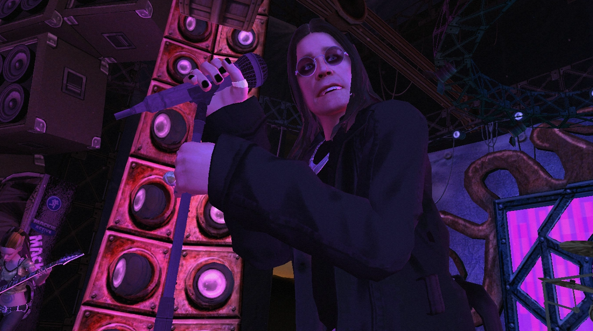
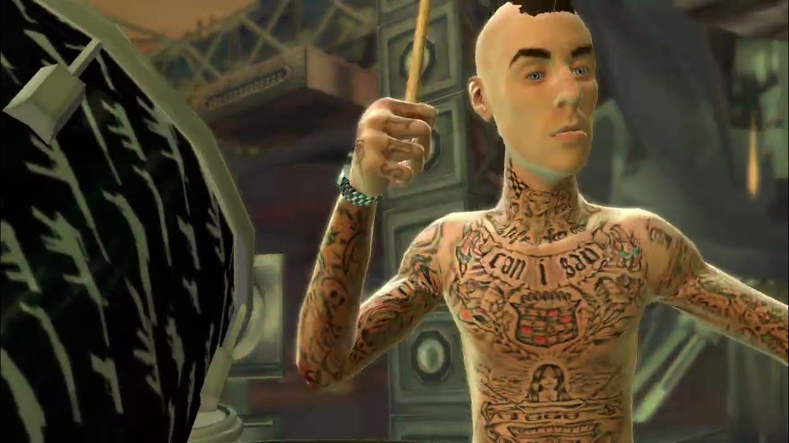

Personajes
La saga de Guitar Hero cuenta con una variedad de personajes icónicos que los jugadores pueden elegir para representar su estilo
en el escenario virtual. Desde rockeros clásicos hasta estrellas del pop, cada personaje tiene su propia personalidad y estilo visual.
Algunos personajes destacados incluyen:
- Slash: El legendario guitarrista de Guns N' Roses, conocido por su sombrero de copa y su estilo rockero.
- Tom Morello: Guitarrista de Rage Against the Machine, famoso por su enfoque innovador y su estilo único.
- Hayley Williams: Vocalista de Paramore, de la escena pop punk
- Ozzy Osbourne: El "Príncipe de las Tinieblas", conocido por su carrera en solitario y como vocalista de Black Sabbath.
- Kurt Cobain: Lider de Nirvana, de la escena grunge de la decada de 1990 marcando toda una generación
- Travis Barker: Baterista de Blink 182, de la escena pop punk, un habilidoso baterista.





